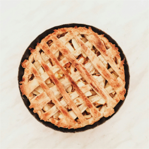
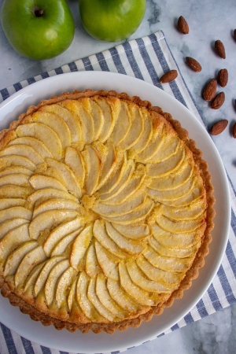
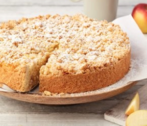
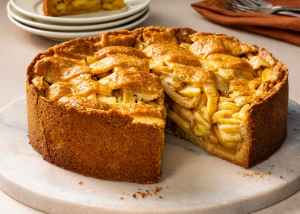
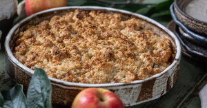
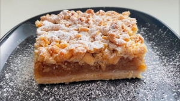

The History of Apple Pie
Many people think apple pie is American, but it actually came from Europe. The first apple pie recipe was written in England in 1381. This recipe was very different from modern apple pies. The crust was thick and hard, made to hold the filling during baking. People often did not eat the crust because it was too tough.
In medieval Europe, sugar was very expensive, so early apple pies used honey or were not very sweet. The pies also included figs, raisins, pears, and saffron along with the apples.
European settlers brought apple seeds and pie recipes to America in the 1600s. Apples grew very well in the American climate. By the 1700s, a lot of farms had apple trees. Apples were cheap and easy to store through the winter, which made apple pie a common dessert. By the 1800s, apple pie became a symbol of American culture and home cooking.
Apple Pie Around the World
United States — Classic Apple Pie
The classic American apple pie has a double crust (top and bottom). The filling includes sliced apples, sugar, cinnamon, and sometimes nutmeg. Americans often serve apple pie warm with vanilla ice cream on top.
Image from: Unsplash


France — Tarte aux Pommes
This is a French apple tart with thin apple slices arranged in neat circles on top. It has no top crust. The apples are often glazed with apricot jam after baking, which makes them shiny. The crust is more like a sweet pastry than American pie crust.
Image from: Mission Food Adventure
England — British Apple Pie
British apple pie is similar to American pie but sometimes includes raisins, blackberries, or other fruits mixed with the apples. Some recipes use custard or cream inside the pie.
Image from: Unsplash


Germany — Apfelkuchen
This is more like a cake than a pie. It has a soft, cakey base with apple slices baked on top. Sometimes it has a crumb topping or a glaze. Germans serve it with whipped cream or coffee.
Image from: Unsplash
Netherlands — Dutch Apple Pie / Appeltaart
Dutch apple pie is very thick, sometimes 2-3 inches tall. It has a lattice top crust and the filling often includes raisins, lemon juice, and cinnamon. The Dutch serve it with whipped cream.
Image from: America's Test Kitchen


Sweden — Äppelpaj
Swedish apple pie has a crumble topping instead of a crust. It is served warm with vanilla sauce or ice cream. The topping is buttery and sweet.
Image from: Fredriks Fika
Austria — Apfelstrudel (Apple Strudel)
Apple strudel is made with very thin pastry dough that is stretched until you can see through it. The dough is rolled around a filling of apples, raisins, sugar, and cinnamon. The pastry becomes crispy and flaky when baked. Strudel is served warm with powdered sugar or vanilla sauce.
Image from: Lil' Vienna


Poland — Szarlotka
This Polish apple pie has a shortbread-like crust on the bottom and often a crumb topping. The filling is thick and has lots of cinnamon. Some versions use grated apples instead of sliced apples.
Image from: Szefowa Kuchni
Russia — Sharlotka
Russian apple cake is very simple. It is more like a cake than a pie, with apple slices baked into a light, fluffy batter. There is no crust. It is served plain or with powdered sugar.
Image from: Food & Wine

Similar Apple Desserts
Apple Crisp / Apple Crumble
This dessert has baked apples on the bottom and a crumbly, buttery topping made from flour, butter, sugar, and sometimes oats. It has no bottom crust, which makes it easier to make than pie.
Apple Brown Betty
This is an American dessert with layers of spiced apples and buttered bread crumbs. It is baked until golden and crispy on top.
Tarte Tatin
This French upside-down tart has caramelized apples on the bottom. The pastry is placed on top and the whole thing is flipped over after baking. The apples become sweet and sticky from the caramel.
Apple Turnovers
These are small, individual pastries filled with spiced apples. The dough is folded into a triangle or half-moon shape and baked or fried until golden.
Why So Many Versions?
Apples grow in many countries with cool climates. Each culture developed its own way of baking with apples based on local ingredients and traditions. Some cultures had access to butter and made flaky crusts. Others used cake-like batters or thin stretched dough. But all these desserts share the same goal: to make the sweet, tart flavor of apples even more delicious.